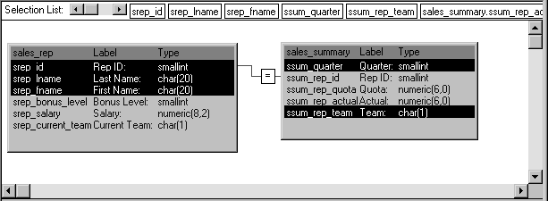
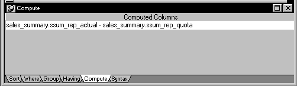
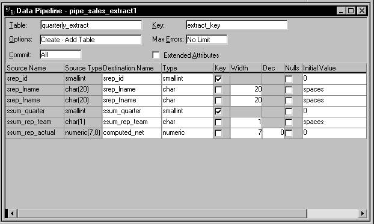
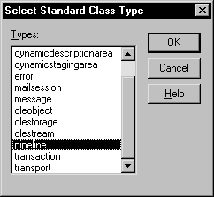
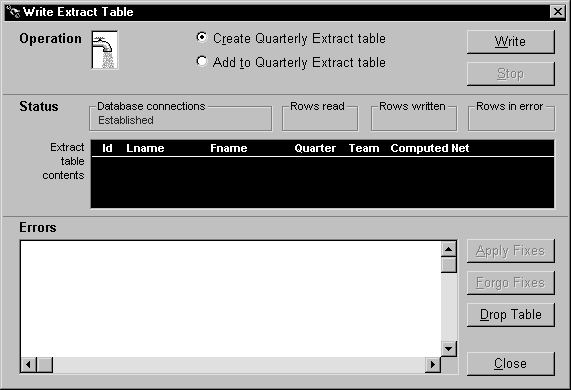

To implement data piping in an application, you need to build a few different objects:
You must build a Pipeline object to specify the data definition and access aspects of the pipeline that you want your application to execute. Use the Data Pipeline painter in PowerBuilder to create this object and define the characteristics you want it to have.
Among the characteristics you can define in the Data Pipeline painter are:
For full details on using the Data Pipeline painter to build your Pipeline object, see the PowerBuilder User's Guide .
Here is an example of how you would use the Data Pipeline painter to define a Pipeline object named pipe_sales_extract1 (one of two Pipeline objects employed by the w_sales_extract window in a sample order entry application).
The source data to pipe This Pipeline object joins two tables (Sales_rep and Sales_summary) from the company's sales database to provide the source data to be piped. It retrieves just the rows from a particular quarter of the year (which the application must specify by supplying a value for the retrieval argument named quarter):

Notice that this Pipeline object also indicates specific columns to be piped from each source table (srep_id, srep_lname, and srep_fname from the Sales_rep table, as well as ssum_quarter and ssum_rep_team from the Sales_summary table). In addition, it defines a computed column to be calculated and piped. This computed column subtracts the ssum_rep_quota column of the Sales_summary table from the ssum_rep_actual column:

How to pipe the data The details of how pipe_sales_extract1 is to pipe its source data are specified here:

Notice that this Pipeline object is defined to create a new destination table named Quarterly_extract. A little later you will learn how the application specifies the destination database in which to put this table (as well as how it specifies the source database in which to look for the source tables).
So far you have seen how your Pipeline object defines the details of the data and access for a pipeline, but a Pipeline object does not include the logistical supports—properties, events, and functions—that an application requires to handle pipeline execution and control.
To provide these logistical supports, you must build an appropriate user object inherited from the PowerBuilder Pipeline system object. Table 17-1 shows some of the system object's properties, events, and functions that enable your application to manage a Pipeline object at runtime.
| Properties | Events | Functions |
|---|---|---|
| DataObject RowsRead RowsWritten RowsInError Syntax |
PipeStart PipeMeter PipeEnd |
Start Repair Cancel |
A little later in this chapter you will learn how to use most of these properties, events, and functions in your application.
 To build the supporting user object for a pipeline:
To build the supporting user object for a pipeline:
Select Standard Class from the PB Object tab of the New dialog box.
The Select Standard Class Type dialog box displays, prompting you to specify the name of the PowerBuilder system object (class) from which you want to inherit your new user object:

Select pipeline and click OK.
Make any changes you want to the user object (although none are required). This might involve coding events, functions, or variables for use in your application.
To learn about one particularly useful specialization you can make to your user object, see "Monitoring pipeline progress".
 Planning ahead for reuse As you work on your user object, keep in mind that it can
be reused in the future to support any other pipelines you want
to execute. It is not automatically tied in any way to a particular
Pipeline object you have built in the Data Pipeline painter.
Planning ahead for reuse As you work on your user object, keep in mind that it can
be reused in the future to support any other pipelines you want
to execute. It is not automatically tied in any way to a particular
Pipeline object you have built in the Data Pipeline painter.
Save the user object.
For more information on working with the User Object painter, see the PowerBuilder User's Guide .
One other object you need when piping data in your application is a window. You use this window to provide a user interface to the pipeline, enabling people to interact with it in one or more ways. These include:
When you build your window, you must include a DataWindow control that the pipeline itself can use to display error rows (that is, rows it cannot pipe to the destination table for some reason). You do not have to associate a DataWindow object with this DataWindow control—the pipeline provides one of its own at runtime.
To learn how to work with this DataWindow control in your application, see "Starting the pipeline " and "Handling row errors ".
Other than including the required DataWindow control, you can design the window as you like. You will typically want to include various other controls, such as:
If you need assistance with building a window, see the PowerBuilder User's Guide .
The following window handles the user-interface aspect of the data piping in the order entry application. This window is named w_sales_extract:

Several of the controls in this window are used to implement particular pipeline-related capabilities. Table 17-2 provides more information about them.